Deploy a Publisher
The Netskope Private Access Publisher can be deployed on AWS, Azure, GCP, HyperV, VMWare ESXi, and any Ubuntu 20.04 based virtual machine (VM). A generic Ubuntu 20.04 LTS deployment is also supported when using the curl command shown in Configure a Publisher in GCP. The following sections provide the requirements and some recommendations, plus instructions for each of these deployments.
Note
A Ubuntu 20.04 minimized server image cannot be supported as it does not contain systemd-resolve, which is required when running the install script.
The Publisher does not need to be deployed on the same network where the private app will be accessed, but it needs to have L3 reachability to the Private Apps.
Using at least a pair of Publishers for each Private App is recommended so they can provide high-availability access.
Note
Netskope recommends that you replace existing Centos-based Publishers with new Publishers that are based on Ubuntu OS. All Publisher releases starting with r94 support Ubuntu OS. To deploy a new Publisher, please follow the instructions in Deploy a Publisher. To learn how to transition a CentOS-based Publisher to an Ubuntu-based Publisher, go to CentOS-based Publisher Support End of Life.
Note
A Publisher needs reachability to the official Ubuntu Mirrors during the update process. Please review and allow the appropriate destinations for a successful Publisher software update.
Before deploying a Publisher, factor these requirements and recommendations:
General Host Requirements
2 CPUs
4 GB RAM
8 GB HDD space
Network Time Protocol
For Network Time Protocol (NTP), either:
Ensure your local NTP servers are synchronized properly (this is generally required in case of DHCP networking configuration).
Ensure that access to Internet NTP servers works properly.
Publisher Capacity
When factoring publisher capacity and scaling, consider the following key points:
By default, up to 100 Publishers can be deployed. A message appears on the Publishers page when you're approaching the maximum limit. You can remove unused Publishers, or contact Support to increase the limit.
Each Publisher can handle around 500 Mbps of throughput.
A Publisher is agnostic to the number of users that traverse it.
A Publisher is limited to using a single IP address for both inbound and outbound connections.
A single publisher can support up to 32,000 concurrent TCP or UDP connections per IP destination.
Firewall Requirements
The Publisher only requires communication over the following ports and protocols:
Inbound
SSH Access: Port 22 for management.
Outbound
DNS: Port 53.
HTTPS: Port 443.
Other Ports: The Publisher requires connectivity to/from the TCP and UDP ports necessary for application access.
DNS and IP Information
Publisher uses DNS for Enrollment into the NPA service and for connecting to the NewEdge cloud. Please refer to the following DNS information for your NPA tenant.
https://gateway.npa.goskope.comhttps://stitcher.npa.goskope.com*.docker.com*.docker.io*.ubuntu.comhttps://ns-<TENANTID>.<POPNAME>.npa.goskope.comTENANTIDwould be the typical ID, such as 1234, etc.POPNAMErepresents the Home PoP Name.
For example: ns-1234.us-sjc1.npa.goskope.com.
For Management Plane IPs, go to List of IP Ranges for Allowlisting  and refer to the Netskope Private Access List for Allowlisting table.
and refer to the Netskope Private Access List for Allowlisting table.
For Dataplane IPs, go to Data Plane IP Ranges .
Publisher Sizing for Apps or Wildcard Networks/Domains
While publishers are agnostic to the number of users, the number of users that are supported by a single publisher is dependent on the type of application. Use the information below to help determine maximum number of users per publisher based on the applications used:
For web applications, browsers can open up to six concurrent connections per domain. For the purpose of sizing, the recommendation is to divide 32,000 by 6 to derive how many maximum concurrent users may be using a single Publisher for a web server.
For FTP workloads, it’s 2 TCP connections per user per FTP session.
For SSH/SQL connections, it’s one TCP connection per user.
To scale access to broad networks and/or large applications, the following approach can be used. A round robin mechanism to load balance users across publishers is used.
In order for NPA to distribute the load evenly across the newly introduced Publishers in the cluster, you can reboot the original set of Publishers during a maintenance window. This results in users getting evenly distributed across Publishers.
| 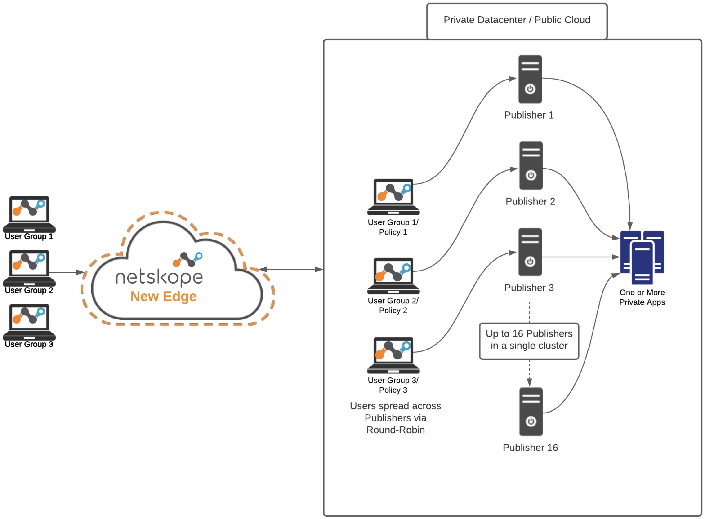 |
Important
Netskope does not recommend spreading publishers serving the same application across different physical locations or geographic regions as this could result in higher latency for some users.
Networking Services
Network:
Publishers should have network connectivity to your internal apps.
Publishers should have network connectivity (outbound) to the Internet to reach various Netskope services: configuration, gateways, upgrade, and other service endpoints.
DNS:
Publishers should be able to resolve internal service names, for example:
myapp.example.com.Publishers should be able to resolve external service names (on the Internet), including the various Netskope services: configuration, gateways, upgrade, and other service endpoints.
SSH:
You should be able to SSH into the Publisher from an internal desktop computer for basic administration tasks, such as passing the registration token to the Publisher during initial setup and troubleshooting any issues which might arise. A publisher cannot be used to connect to itself.
If you deploy the Publisher VM into a network with DHCP services, it should pick up a valid networking configuration automatically, including an IP address, default gateway, and DNS.
If you deploy the publisher VM into a network without DHCP services, you must configure a static IP address, default gateway, and DNS.
Netskope recommends that your network includes DHCP.
Note
Publishers may be subject to SSL interception. Make sure that access to *.npa.goskope.com is disabled for SSL interception.
Network Settings
In the Publisher Wizard (available via your virtualization console or after SSHing to a running Publisher), you can now select Network Settings for configuration details.
There are two configuration options available:
DHCP: This allows you to specify a network adapter for DHCP configuration. eth0 is used in the example, but other adapters may be present depending on your Publisher hardware configuration. For example, ens32 or similar will be present on Publishers deployed to VMWare.
Static IP: This option allows you to specify static IP address configurations in environments where DHCP configuration is not possible. The following values must be provided as part of this configuration:
Network Adapter
IP Address and Mask: For example, 192.168.1.189/24
Gateway: For example, 192.168.1.1
DNS Servers: We recommend using two DNS server IP addresses, though only 1 is required.
Default Search Domain: This configuration is typically set to match the domain name of your company.
Note
For Publishers running in Public Cloud environment like AWS, Azure and GCP, network settings need to be set via the Cloud Provider Console.
Publisher wizard settings allow adding one default search domain. Use the following steps to add multiple search domains on Ubuntu 20.04 publisher machines:
Create a
/etc/netplan/51-cloud-init.yamlfile with multiple search domains. For example:Network: Ethernets: Eth0: nameservers: search: [one.com] search: [two.com] search: [three.com] search: [four.com] search: [five.com] search: [six.com]
Run this command:
sudo netplan try.Run this command:
sudo netplan apply.
Only six or less search domains can be added through netplan due to the limitation in systemd on Ubuntu 20.04. If there is a requirement to add more than six search domains, add the search domains in /etc/resolv.conf instead of netplan. Keep in mind the settings don't persist on reboot, and the entries for search domains need to be added again if a Publisher is rebooted.
Netskope provides prebuilt Publishers for VMWare (OVA format), Hyper-V (VHDX), Azure (VHD), and AWS (AMI). Additionally, you can also deploy a Publisher on top of a Ubuntu 20.04 based machine for other environments, such as GCP. The deployment methods and use of Docker images may raise some concerns about hardening and security. This document provides info that can be used by customers under NDA to better understand how a Publisher is deployed and maintained.
OS Requirements
Ubuntu 20.04 is supported.
Significant changes from the previously supported CentOS-based machine are:
Ubuntu Publishers are CIS benchmark enabled.
AppArmor and ufw are used instead of SELinux and FirewallD.
OS Hardening
Netskope takes a number of hardening steps for the images we provide including:
Disabling root login to base OS and container OS.
Removing root password.
Removing unneeded Linux firmware and packages.
Running the latest security updates prior to capturing the image.
Disabling support for CTL-ALT-DEL to prevent accidental or malicious system restarts.
You can perform additional hardening steps, such as:
Hardening SSH to use keys rather than passwords. AWS AMI uses keys by default. Publishers deployed on other platforms must be manually configured to use keys.
Using the native Ubuntu 20.04 firewall or network firewalls to limit access to and from the Publisher.
Netskope Private Access leverages RSA 2048 for all encrypted communications including Client, Publisher, and inner tunnel.
Updates
Netskope updates the host OS and the Publisher package during the software update process:
Base OS ( Ubuntu 20.04) security updates.
Publisher (security, functionality, and enhancements).
Netskope recommends that Publishers should always be updated to the most recent software version.
AppArmor and ufw for Ubuntu
The NPA Publisher is configured with AppArmor and ufw enabled and running. During Publisher installation, the following ufw configurations are made in order to enable the NPA Publisher to process data packets appropriately.
apt-get install -y ufw echo y | ufw enable ufw allow to 191.1.1.1/32 proto tcp port 784 ufw allow to 191.1.1.1/32 proto udp port 785 ufw allow in on tun0 to any port 53 proto tcp ufw allow in on tun0 to any port 53 proto udp ufw allow 22/tcp ufw allow in on lo ufw deny in from 127.0.0.0/8 ufw deny in from ::1 ufw reload sudo pkill npa_publisher
Note
As indicated above, this configuration is applied automatically in all current NPA Publisher releases and is included here for reference/legacy Publishers.
Create a publisher to deploy on your network and use with a private app. The token generated in this procedure is used to deploy the publisher, so be sure to make a copy. Auto-Update profiles have been add to the Publisher settings. If you have not yet created an Auto-Update profile, you can choose to use the default profile, or go to Configure Publisher Auto-Updates to create one.
Go to Settings > Security Cloud Platform > Publishers.
Click New Publisher.
Enter a Publisher name (like
AWS US-WestWing publisher), and then select an Auto-Update profile.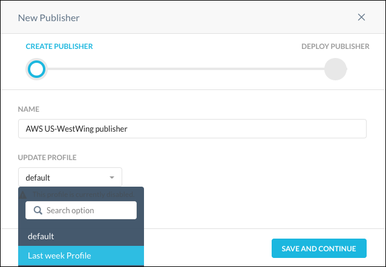 Click Save and Continue.
Click Generate Token.
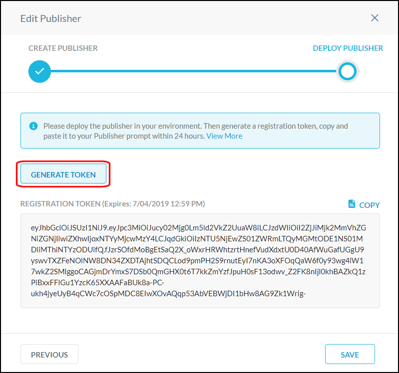 Click Copy to get the registration token.
Click Done.
After deploying the publisher, return to the Publisher page to verify the status is Connected.
 |
The Publishers page shows how many Publishers have been created, each Publisher's name, status, version, CN, and number of connected apps. To customize the columns shown on the page, click the gear icon in the table header and check the columns you want to see. To edit the name, delete, or update a Publisher, click the menu icon  in the row a Publisher is listed.
in the row a Publisher is listed.
You can search for and filter Publishers listed on the page. Enter search criteria to locate a specific Publisher, or click Add Filter to view and select the predefined Status, Update Profile, and Version Status filters, and then click Apply.
| 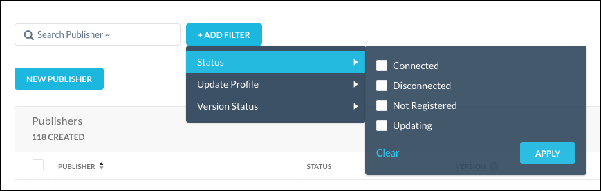 |
The Netskope Publisher allows for zero trust network access to applications and hosts in your public cloud or private data center. This includes the ability to leverage a Publisher in Amazon Web Services.
This topic explains how to create a Publisher instance in Amazon Web Services. Knowledge of the Netskope UI and Amazon Web Services are required, along with:
A Netskope Tenant.
A copy of your Publisher registration token.
An Amazon Web Services account.
To access the AMI file from the Publisher page in the Netskope UI, go to Settings > Security Cloud Platform > Publishers and click Publisher AMI .
| 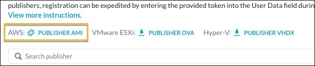 |
Perform these steps in the AWS console.
Sign in to your Amazon Web Services (AWS) console.
Click Services > Find services. Search for EC2 and then select EC2.
Click Instances in the left sidebar menu.
Click Launch Instance.
Click AWS Marketplace in the left sidebar menu.
Enter
Netskopein the search bar.Netskope Private Access Publishershould appear in the search results. Click Select.
Select t3.medium as the instance type.
Click Next: Configure Instance Details.
The token you copied from the Netskope UI is needed to complete these steps.
Enter
1in the Number of instances field.Select the VPC where the application you want to publish via Netskope is deployed in the Network field.
Keep the default values for the remaining fields.
Click Advanced Details to expand this section.
In the User data section, select the As text option.
Enter the Netskope Publisher registration token into the User Data text field.
Adding a name tag is optional, but doing so will make it easier to identify your Netskope Publisher EC2 instance.
Click the Add Tags tab, near the top of the page.
Click Add Tag.
Enter
Namein the Key field.Enter
AWS US-WestWing publisherin the Value field.Click Review and Launch.
Review the information in the AMI Details Instance Type sections.
Click Launch.
Select or create a key pair. This key pair is used to ssh in to the Publisher VM. Password-based authentication is by default disabled on the AWS publishers.
Click Launch Instances.
Review the information on the Launch Status page.
Click View Instances.
You should now see a new EC2 instance with the name
AWS US-WestWing publisher(if you completed the Add a Name Tag steps).AWS typically takes several minutes to launch EC2 instance and run status checks. Wait until your Instance State is Running and Status Checks have passed.
Register the Publisher
Note
Registering the Publisher is optional and only required if the Publisher token was not provided during the initial Publisher instance deployment.
SSH into the publisher (default username: ubuntu, default password: ubuntu). When prompted, change your password. After you change it, the system auto-disconnects your SSH session, so you will need to reconnect and log in with their new password before proceeding.
SSH into the Publisher (default username:
ubuntu, default password:ubuntu).Note
In the event of a password change, the new password must meet the following minimum requirements:
Minimum password length must be 14 characters.
Must contain one upper case letter.
Must contain one lower case letter.
Must contain one digit (number).
Must contain one non-alphanumeric character.
Cannot be a palindrome.
When prompted for a menu choice, select Register.
When requested, enter the Netskope registration token, and then click Enter. You can also enter the token with this command:
sudo ./npa_publisher_wizard -token <TOKEN>.Go to Settings > Security Cloud Platform > Publishers in your Netskope tenant and confirm your Publisher has a Connected status. If not, go to Publisher Logs for Troubleshooting.
The Netskope Publisher allows for zero trust network access to applications and hosts in your public cloud or private data center. This includes the ability to leverage a Publisher in VMWare ESXi.
This topic explains how to create a Publisher instance in VMWare ESXi. Knowledge of the Netskope UI and VMWare ESXi are required, along with:
A Netskope Tenant
A copy of your Publisher registration token
A VMWare ESXi account, version 6 or later.
To access the OVA from the Publisher page in the Netskope UI, go to Settings > Security Cloud Platform > Publishers and click Publisher OVA to download the Publisher OVA file. The OVA file is needed to create a ESXi-based Publisher.
| 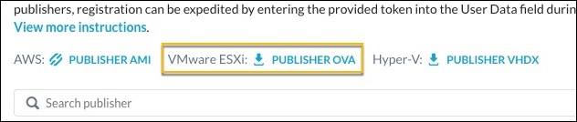 |
Note
If you want to validate the integrity of the OVA, you can download the SHA hash from here.
Perform these steps in the VMWare ESXi console.
Log in to your ESXi instance and click Virtual Machines.
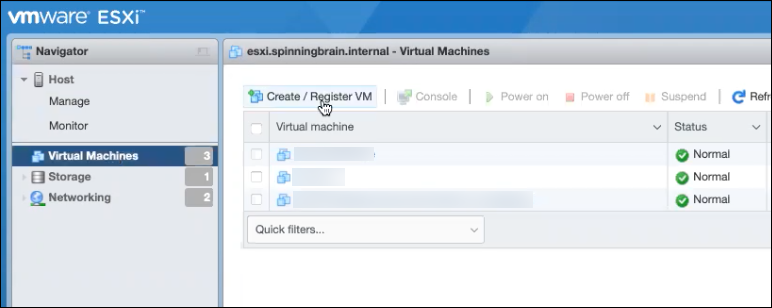 Click Create/Register VM.
For Select Creation Type, select Deploy a virtual machine from an OVF or OVA file, and then click Next.
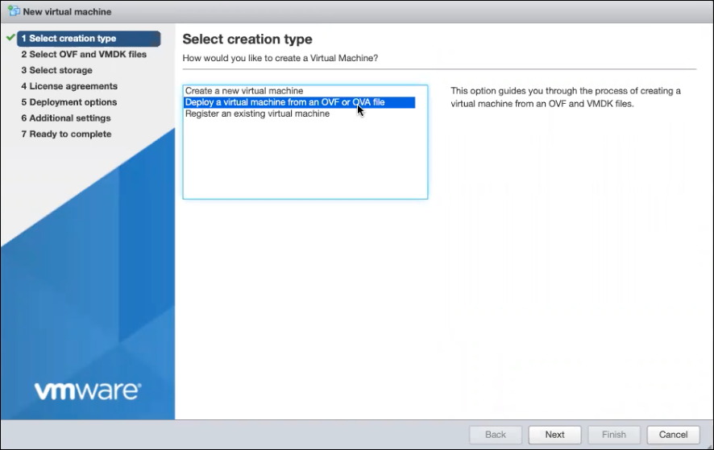 For Select OVF and VMDK files, enter a name for the VM, drag and drop the OVA from Netskope, and then click Next.
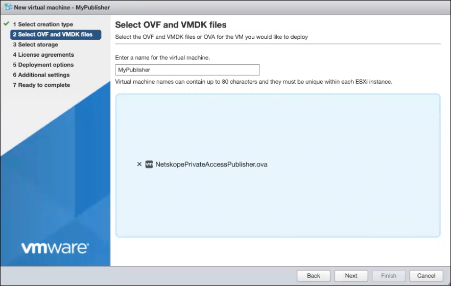 For Select Storage, keep the default settings and click Next.
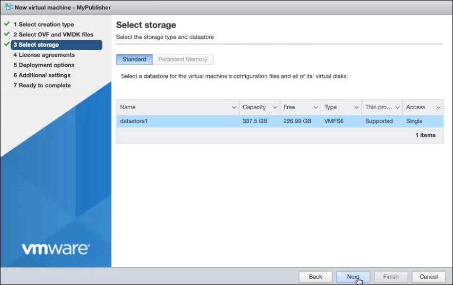 For Deployment Options, select your default network, and then click Next.
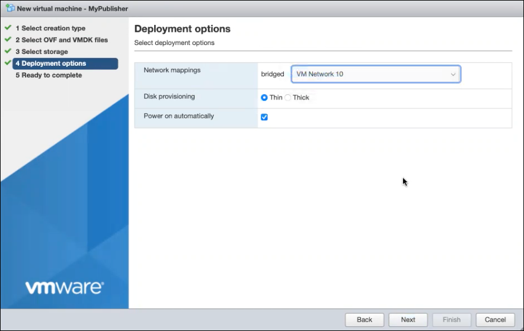 For Ready to Complete, review the settings to confirm, and then click Finish.
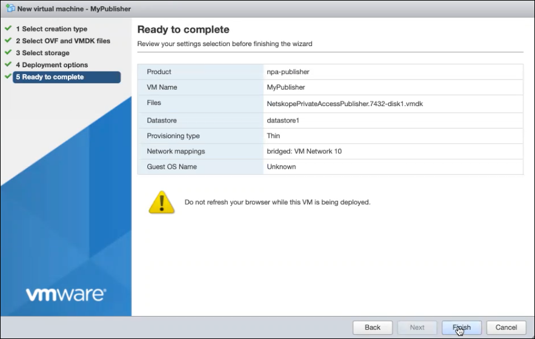 If a Publisher needs additional interfaces, proceed to step 8.
To add another interface, click on the VM you just created and then click Edit Settings.
Click Add Network Adapter, and then click Save.
SSH into the publisher (default username: ubuntu, default password: ubuntu). When prompted, change your password. After you change it, the system auto-disconnects your SSH session, so you will need to reconnect and log in with their new password before proceeding.
SSH into the Publisher (default username:
ubuntu, default password:ubuntu).Note
In the event of a password change, the new password must meet the following minimum requirements:
Minimum password length must be 14 characters.
Must contain one upper case letter.
Must contain one lower case letter.
Must contain one digit (number).
Must contain one non-alphanumeric character.
Cannot be a palindrome.
When prompted for a menu choice, select Register.
When requested, enter the Netskope registration token, and then click Enter. You can also enter the token with this command:
sudo ./npa_publisher_wizard -token <TOKEN>.Go to Settings > Security Cloud Platform > Publishers in your Netskope tenant and confirm your Publisher has a Connected status. If not, go to Publisher Logs for Troubleshooting.
The Netskope Publisher allows for zero trust network access to applications and hosts in your public cloud or private data center. This includes the ability to leverage a Publisher in Hyper-V.
This topic explains how to create a Publisher instance in Hyper-V. Knowledge of the Netskope UI and Hyper-V are required, along with:
A Netskope Tenant
A copy of your Publisher registration token
A Hyper-V account.
To access the VHDX file from the Publisher page in the Netskope UI, go to Settings > Security Cloud Platform > Publishers and click Publisher VHDX.
| 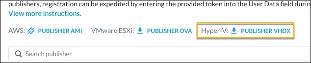 |
Note
If you want to validate the integrity of the VHDX, download the SHA hash from here.
Perform these steps in the Hyper-V console.
Launch the Microsoft Hyper-V Manager and select the Action New > Virtual Machine....

Enter a VM Name (like NPA Publisher), optionally an installation location, and then click Next.
Tip
Name the Publisher to describe its location and/or application use.

Leave Generation 1 selected and click Next.
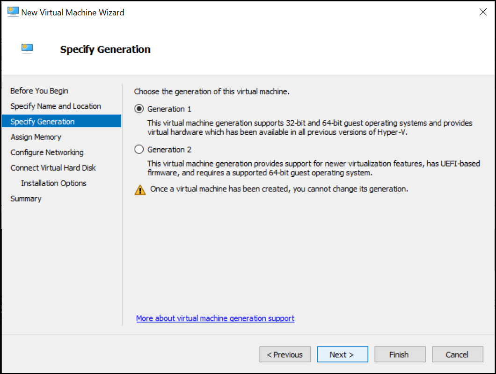 Specify the amount of memory for the NPA Publisher (4096 is recommended for most use cases) and click Next.
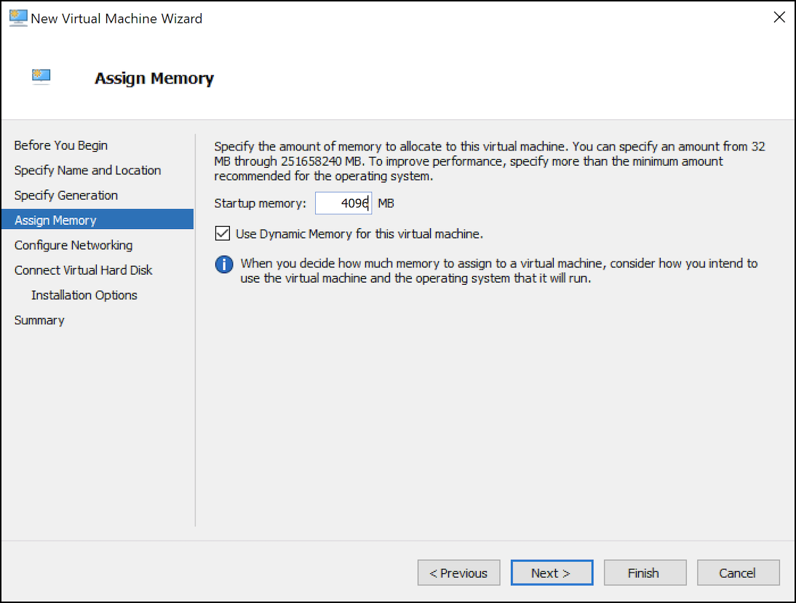 Select a network adapter to attach the NPA Publisher that has Internet access and click Next.

Select Use an existing virtual hard disk and then Browse to the downloaded VHDX file. When finished, click Next.
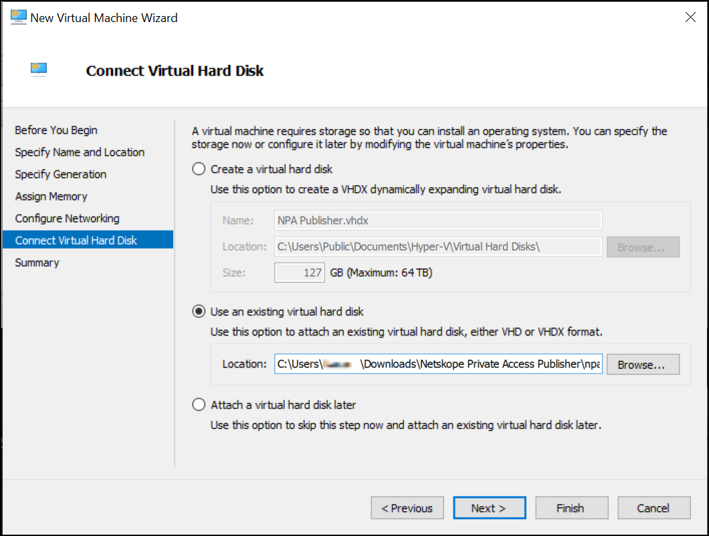 Confirm the Hyper-V Wizard configuration options and click Finish.
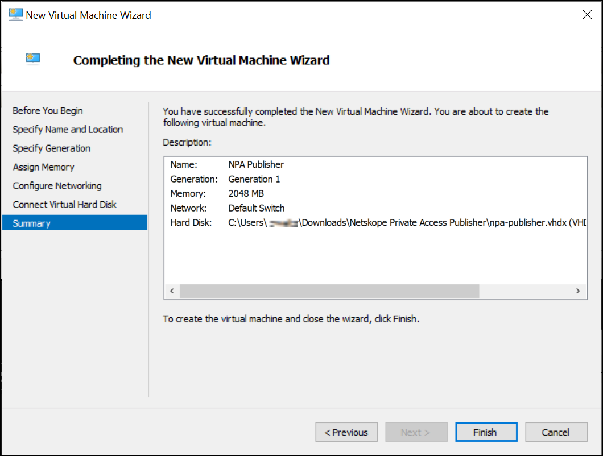 Now you can Start your NPA Publisher in Hyper-V.

Get the IP address provided by the Hyper-V Manager to SSH into a Publisher for Network Settings.

Register the Publisher
SSH into the publisher (default username: ubuntu, default password: ubuntu). When prompted, change your password. After you change it, the system auto-disconnects your SSH session, so you will need to reconnect and log in with their new password before proceeding.
SSH into the Publisher (default username:
ubuntu, default password:ubuntu).Note
In the event of a password change, the new password must meet the following minimum requirements:
Minimum password length must be 14 characters.
Must contain one upper case letter.
Must contain one lower case letter.
Must contain one digit (number).
Must contain one non-alphanumeric character.
Cannot be a palindrome.
When prompted for a menu choice, select Register.
When requested, enter the Netskope registration token, and then click Enter. You can also enter the token with this command:
sudo ./npa_publisher_wizard -token <TOKEN>.Go to Settings > Security Cloud Platform > Publishers in your Netskope tenant and confirm your Publisher has a Connected status. If not, go to Publisher Logs for Troubleshooting.
The Netskope Publisher allows for zero trust network access to applications and hosts in your public cloud or private data center. This includes the ability to leverage a Publisher in Azure.
This topic explains how to create a Publisher instance in Azure. Knowledge of the Netskope UI and Azure are required, along with:
A Netskope Tenant
A copy of your Publisher registration token
An Azure account.
Perform these steps in the Azure console.
Go to Azure Marketplace and search for Netskope Private Access Publisher.
Click Create.
Select Netskope Private Access Publisher from the drop-down menu.
Click Basics.
Select or edit the Resource group and virtual machine, if required.
While creating the VM, the Username field automatically adds
azureuserby default. Change the Username toubuntuto ensure that you log in to the correct virtual machine.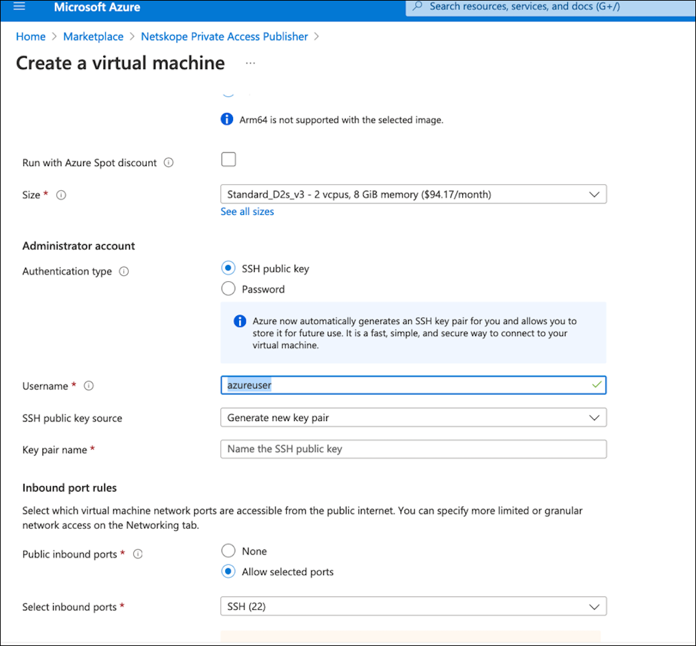 Copy and paste your public SSH key under SSH public key. If you do not have a public SSH key, select Generate new key pair. This key pair is used to ssh in to the Publisher VM. Password-based authentication is by default disabled on the Azure publishers.
Select SSH from the Select public inbound ports dropdown menu.
Click Next:Disks.
Customize according to the desired disk settings or use the default settings.
Click Next: Networking.
Review your networking settings.
Select SSH from the Select public inbound ports dropdown menu.
Click Review + Create and analyze the virtual machine settings.
Click Create.
Wait until the deployment completes.
Click Virtual machines.
Select the newly created VM.
Find a public IP address.
On your computer terminal execute:
ssh -i <your_private_ssh.key> ubuntu@<ipaddress>.
Register the Publisher
Note
Registering the Publisher is optional and only required if the Publisher token was not provided during the initial Publisher instance deployment.
SSH into the publisher (default username: ubuntu, default password: ubuntu). When prompted, change your password. After you change it, the system auto-disconnects your SSH session, so you will need to reconnect and log in with their new password before proceeding.
SSH into the Publisher (default username:
ubuntu, default password:ubuntu).Note
In the event of a password change, the new password must meet the following minimum requirements:
Minimum password length must be 14 characters.
Must contain one upper case letter.
Must contain one lower case letter.
Must contain one digit (number).
Must contain one non-alphanumeric character.
Cannot be a palindrome.
When prompted for a menu choice, select Register.
When requested, enter the Netskope registration token, and then click Enter. You can also enter the token with this command:
sudo ./npa_publisher_wizard -token <TOKEN>.Go to Settings > Security Cloud Platform > Publishers in your Netskope tenant and confirm your Publisher has a Connected status. If not, go to Publisher Logs for Troubleshooting.
The Netskope Publisher allows for zero trust network access to applications and hosts in your public cloud or private data center. This includes the ability to leverage a Publisher in Google Cloud Platform.
Note
If you deploy a Publisher in GCP, make sure to bump up the MTU to 1500 bytes. By default, GCP sets it to 1460 bytes.
This topic explains how to create a Publisher instance in Google Cloud Platform Storage. Knowledge of the Netskope UI and Google Cloud Platform are required, along with:
A Netskope Tenant
A copy of your Publisher registration token
A Google Cloud Platform account with a working VPC setup and API permissions.
Important
Ensure your /tmp folder has a 777 permission for successful Publisher deployments and OS updates.
Perform these steps in the Google Cloud Platform console.
Log in to Google Cloud Platform at https://console.cloud.google.com/.
Click the menu icon in the top left and select Compute Engine and then VM instances.
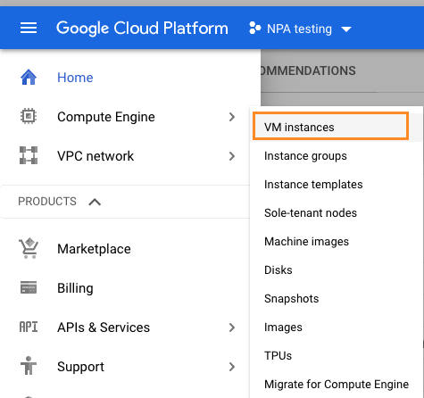 Click Create Instance.
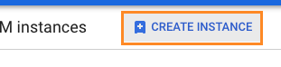 Enter a name for the instance, like
netskope-publisher.
Select a Region and Zone. For testing purposes this can be anything. In a production environment, you want to enter the region and zone where the applications reside.
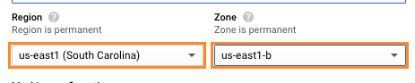 Configure the instance memory and CPU settings (2 core, 4 GB memory is the recommended setting, but for testing purposes a smaller machine will work).
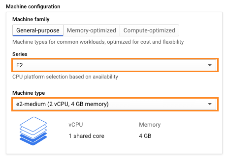 Click Change under Boot disk.

Select Ubuntu as the Operating System and Ubuntu 20.04 LTS as the Version. Leave the Boot disk type and Size as the defaults.
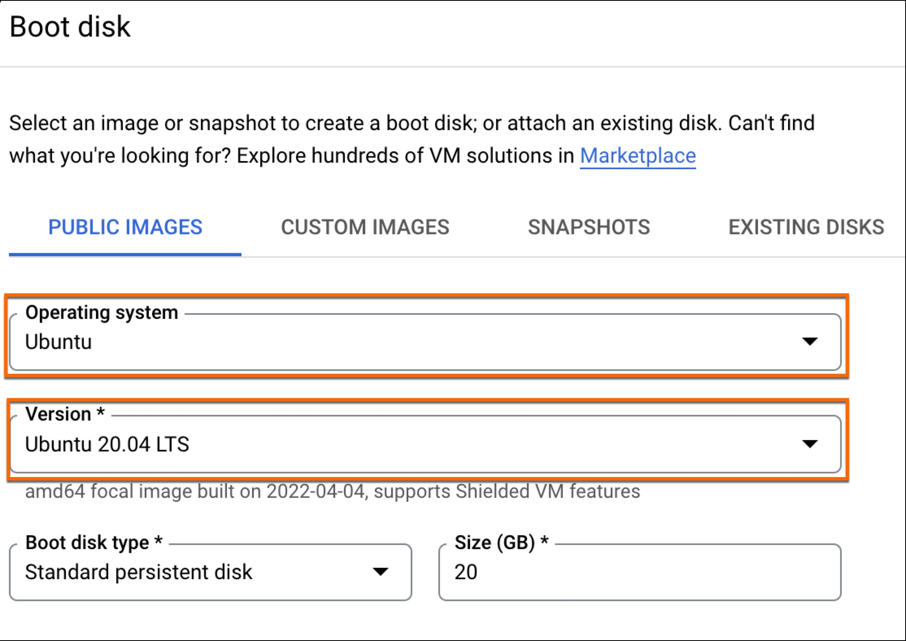 Click Select.

Note: Steps 10-13 are optional if no other route to the internet is available.
Click Management, security, disks, networking, sole tenancy
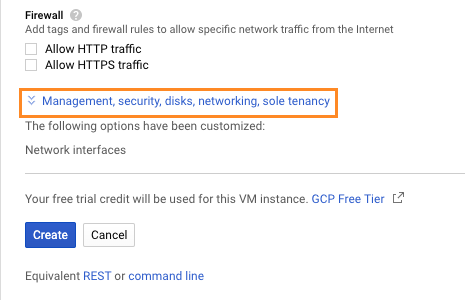 Click Networking.
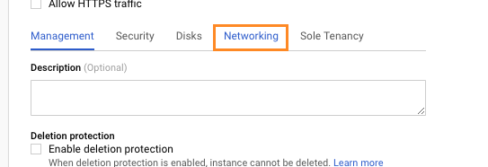 Click the pencil icon to edit the network interface.
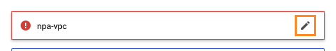 Select your Network, Subnetwork, and specify an Ephemeral external IP.

Click Create to start the instance creation.
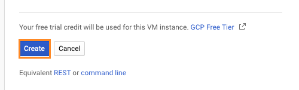 Once the instance is available, connect to it by clicking SSH under the Compute Engine page.
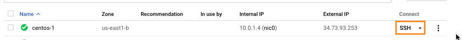 Run the following command in the SSH session to download and install the necessary components for the Publisher. This may take about 10 minutes.
curl https://s3-us-west-2.amazonaws.com/publisher.netskope.com/latest/generic/bootstrap.sh | sudo bash; sudo su - $USER; exit
At the end of this process, you have a fully functional Netskope Publisher and can register it with Netskope.
Register the Publisher
SSH into the publisher (default username: ubuntu, default password: ubuntu). When prompted, change your password. After you change it, the system auto-disconnects your SSH session, so you will need to reconnect and log in with their new password before proceeding.
SSH into the Publisher (default username:
ubuntu, default password:ubuntu).Note
In the event of a password change, the new password must meet the following minimum requirements:
Minimum password length must be 14 characters.
Must contain one upper case letter.
Must contain one lower case letter.
Must contain one digit (number).
Must contain one non-alphanumeric character.
Cannot be a palindrome.
When prompted for a menu choice, select Register.
When requested, enter the Netskope registration token, and then click Enter. You can also enter the token with this command:
sudo ./npa_publisher_wizard -token <TOKEN>.Go to Settings > Security Cloud Platform > Publishers in your Netskope tenant and confirm your Publisher has a Connected status. If not, go to Publisher Logs for Troubleshooting.